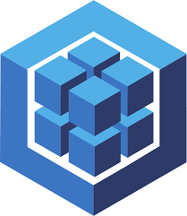
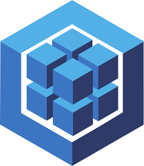

Conceptos generales de una idea
Escrito por: Miguel Ángel Diosdado Rodríguez y Fernanda Montserrat Hernández Ávila
Fecha: 25 de septiembre de 2024
Proyecto: SIMAPE
SIMAPE (por sus siglas Sistema de Manejo de Pensiones) es una aplicación web diseñada para llevar el control de los documentos relacionados a las pensiones de los trabajadores registrados en el sistema del seguro social en México (IMSS).
Características
- Registro y control de usuarios de dos tipos: administrativos y operativos
- Facilita la búsqueda rápida y efectiva de información
- Generar un registro de acciones
- Impresión de un comprobante de cada acción realizada
- Generación de reportes
Funcionamiento
SIMAPE pretende ser una aplicación web con funcionamiento en la intranet de la organización, por lo tanto replica el modelo clásico de cliente-servidor.

La aplicación web tendrá la siguiente estructura:
- Frontend: Interfaz de usuario para interactuar con el sistema
- Backend: Lógica de negocio y acceso a la base de datos
- Base de datos: Almacenamiento de la información de los expedientes
Navegación
La navegación se puede representar con el siguiente diagrama:

El sistema permite iniciar sesión, dar de alta expedientes en la base de datos, buscar un expediente, hacer alguna operación (retiro, ingreso, alta, baja, transferencia) y ver el historial de movimientos realizados.
Al generar un movimiento, se imprime un comprobante en automático de la operación, por lo que cada máquina deberá contar con una impresora térmica. De no ser el caso, o si pasa algún inconveniente, el usuario puede acceder al historial de movimientos para reimprimir el comprobante en caso de ser necesario.
Por último, el usuario administrador tiene la capacidad de generar reportes de un expediente o usuario en específico, con la finalidad de ver todos sus movimientos. Este reporte se puede filtrar por fecha, tipo de pensión o tipo de movimiento.
Ventajas
- Ahorro de tiempo en búsquedas
- Permite llevar un registro de los movimientos que se realizan
- Obtención de comprobantes de movimientos
- Generación de reportes
Desventajas
- Mayores costes al introducir impresoras térmicas y papel termosensible
- Necesidad de capacitación de personal
Beneficios
- Mejora y aumenta la eficiencia del sistema en general
- Ahorro de tiempo
- Trazabilidad de documentos
Implementación
Para llevar a cabo la implementación de SIMAPE, se propone la metodología DevOps, la cual permite la colaboración entre equipos de desarrollo y operaciones para automatizar el proceso de entrega de software.
Galeria
Imágenes de la interfaz de usuario de SIMAPE
Pantalla principal

Datos del usuario

Consulta de expedientes

Gestión de usuarios

Transferencia de expedientes

Comprobante de movimiento

¿Cómo dar a conocer la idea?
La presentación de la idea es un elemento fundamental en la creación de un proyecto, por tanto, y desde mi punto de vista, la mejor manera es construir una presentación dirigida al cliente, en este caso IMSS, y contactar con un directivo que pueda estar interesado en este proyecto. También es relevante mencionar que hacer una prueba de concepto funcional puede contribuir a una mejor impresión, y si además se trabaja la parte estética del producto se tienen más probabilidades de que el cliente quiera darle seguimiento.
Implementando DevOps en SIMAPE
Planificación
- Definición del alcance: Detallar las características de SIMAPE (registro de usuarios, búsqueda, generación de reportes, etc.) y las prioridades.
- Colaboración entre equipos: Administradores de sistemas, desarrolladores y QA deben estar involucrados en la planificación desde el principio.
- Herramientas: Miro para gestionar tareas y facilitar la colaboración y Discord para mantener la comunicación del equipo.
Desarrollo
- Versionado de código: Usar un sistema de control de versiones como Git. Implementar ramas específicas para características (feature branches) como "gestión de usuarios" o "generación de reportes".
- Buenas prácticas de código: Aplicar metodologías ágiles como TDD (Test Driven Development) y refactorización constante.
- Herramientas: GitHub/GitLab para repositorios de código, con políticas de revisión y aprobación para cada commit.
Integración continua (CI)
- Automatización de pruebas: Configurar un entorno de integración continua con Jenkins, Travis CI o GitLab CI/CD que ejecute pruebas automáticas después de cada commit, asegurando que el sistema SIMAPE siempre esté funcionando correctamente.
- Compilación y despliegue: Automatizar la construcción de la aplicación después de cada commit exitoso. Se deben integrar pruebas unitarias y de integración para validar funcionalidades como la generación de reportes y búsqueda de información.
Entrega continua (CD)
- Despliegue automatizado: Configurar el despliegue automático del sistema SIMAPE a entornos de prueba, pre-producción y producción usando herramientas como Docker y Kubernetes para gestionar contenedores y escalabilidad.
- Validación: Desplegar la aplicación a un entorno de pruebas, donde los usuarios administrativos y operativos puedan validar las funcionalidades como el registro de acciones y la generación de comprobantes.
Monitoreo y retroalimentación
- Monitoreo del sistema: Utilizar herramientas como Prometheus, Grafana o Datadog para monitorear el rendimiento de SIMAPE, incluyendo el tiempo de respuesta de la búsqueda de información y la eficiencia en la generación de reportes.
- Logs y alertas: Configurar alertas en caso de errores en el sistema, como fallos en el registro de usuarios o problemas en la generación de reportes. Herramientas como ELK Stack (Elasticsearch, Logstash, Kibana) pueden ayudar en el análisis de logs.
- Feedback continuo: Recoger retroalimentación del equipo de soporte y usuarios finales para mejorar el sistema.
Operaciones y mantenimiento
- Escalabilidad: Planificar la escalabilidad del sistema SIMAPE para que soporte un mayor número de usuarios y documentos a medida que el sistema crezca.
- Actualizaciones frecuentes: Implementar una estrategia de mantenimiento continuo con despliegues pequeños y frecuentes para corregir errores y agregar nuevas funcionalidades.
Tecnologías usadas
- HTML, CSS, JS (Web en general)
- NodeJS (Backend/API/Sesiones)
- Sequelize (ORM para base de datos en SQL)
- MariaDB (Gestor de base de datos SQL)


 


Evaluaciones y métricas de seguridad
Para garantizar la seguridad de SIMAPE, se deben realizar evaluaciones y métricas de seguridad en diferentes etapas del desarrollo y despliegue del sistema.
Pruebas de seguridad
- Pruebas de penetración: Realizar pruebas de penetración para identificar vulnerabilidades en el sistema SIMAPE, como inyección de SQL, XSS (Cross-Site Scripting) y CSRF (Cross-Site Request Forgery).
- Pruebas de seguridad en la API: Validar la seguridad de la API de SIMAPE para evitar ataques de denegación de servicio (DDoS) y proteger la información de los usuarios.
Seguridad en el despliegue
- Seguridad en contenedores: Implementar medidas de seguridad en los contenedores de Docker para proteger la aplicación SIMAPE de posibles vulnerabilidades.
- Seguridad en Kubernetes: Configurar políticas de seguridad en Kubernetes para proteger los pods y servicios de SIMAPE de accesos no autorizados.
Seguridad en la red
- Firewall y WAF: Configurar un firewall y un Web Application Firewall (WAF) para proteger el sistema SIMAPE de ataques externos y filtrar el tráfico malicioso.
- Seguridad en la red interna: Implementar medidas de seguridad en la red interna de la organización para proteger la información de los usuarios y los documentos de SIMAPE.
Seguridad en la base de datos
- Encriptación de datos: Utilizar técnicas de encriptación para proteger los datos sensibles de los usuarios y los documentos almacenados en la base de datos de SIMAPE.
- Seguridad en SQL: Configurar medidas de seguridad en la base de datos SQL de SIMAPE para evitar inyecciones de SQL y proteger la integridad de los datos.
Conclusión
La implementación de DevOps en SIMAPE permite mejorar la colaboración entre equipos, automatizar el proceso de entrega de software y garantizar la calidad y seguridad del sistema. La combinación de tecnologías como NodeJS, Sequelize y MariaDB facilita el desarrollo y despliegue de la aplicación, mientras que las evaluaciones y métricas de seguridad aseguran la protección de la información de los usuarios y los documentos de SIMAPE.